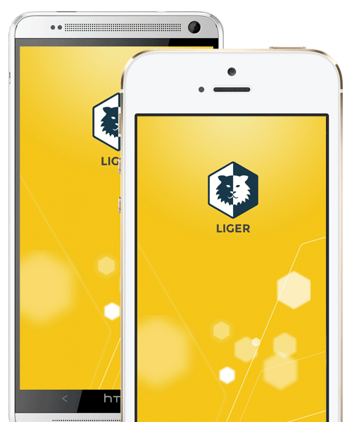

Liger Benefits
LigerMobile invites web developer skills to the app store party. You can now build apps that avoid issues where hybrid apps usually have problems.
-
Native-like
Liger Blends In
Since there are multiple web views, you have access to use native transitions between them. That means a much more native feel to your web apps.
-
Performance
Liger is a Powerful Beast
Because Liger is built to use support multiple pages or web views, you can avoid memory performance pitfalls inherent in single view apps.
-
Agile
Liger is Nimble
Liger deftly switches between native and web views and can share data between them. If you want to create native pages, no problem — Liger supports this too.
-
Flexible
Liger Doesn’t Judge
You want to use Angular.js, go for it. CoffeeScript, Underscore, no problem. Even plain ol’ HTML, the front end is yours to do with as you please.

Getting Started
- Clone Liger Common, Liger iOS and soon to arrive, Liger Android.
- Start building with this handy tutorial!